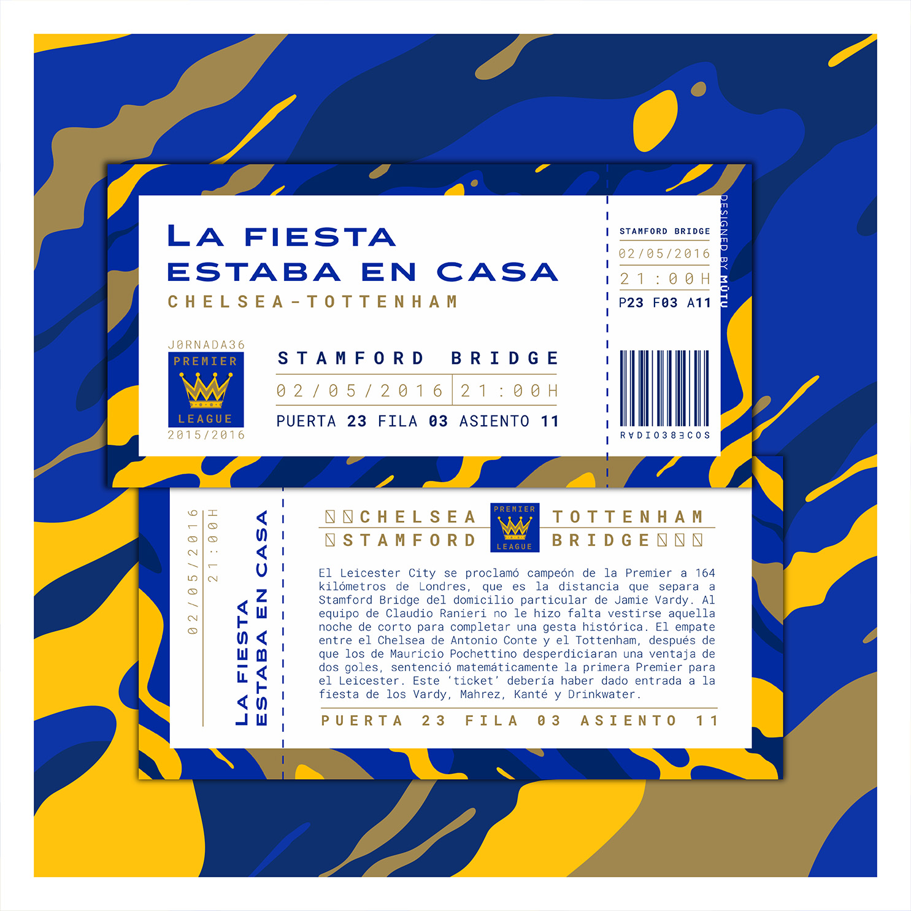

Ecos Radio
An echo that lasts.
In collaboration with Ecos del Balón, we crafted the visual identity for their podcast RADIO 38ECOS, designing branded sections, audiovisual pieces for social media, and a collectible campaign that turned iconic football moments into digital match tickets. These were unveiled across episodes, inviting listeners to follow the season, deepen their connection with the show, and engage with the community in a playful, memorable way.

